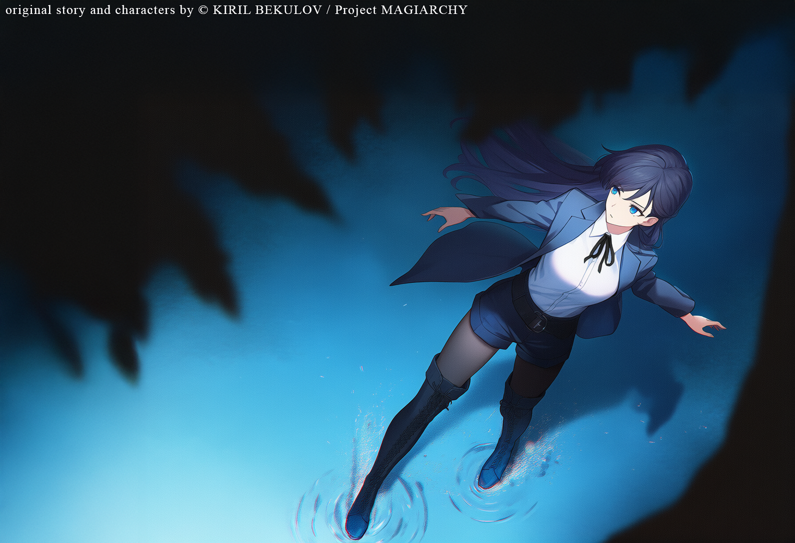

Main Theme (Placeholder)
Replace source with final MP3 path when ready.

Lynleit
Visible Protagonist
Character Dossier
Reality is complete but not sealed. Natural law remains absolute, yet contains exploitable seams. Magic does not violate structure; it applies leverage inside it. Mind, emotion, fear, and belief are treated as structural variables, not symbolism.
Can civilization absorb the truth of its hidden architecture without collapsing under it?
Helena frames Lynleit for Fionn's assassination. That accusation becomes Helena's core leverage, forcing Lynleit into exile while MSF resources are redirected into hunting her.
Kyrien activates as Lynleit's hidden trump card: unpredictable, off-chart, and repeatedly decisive in ambush, captivity, and extraction scenarios.
Tien (from the root "shadow"), Helena's covert enforcer, functions as Kyrien's opposite analogue. Their confrontation becomes a direct contest of protector logic and unpredictability.
MSF keeps its name before and after transformation. The acronym is never revealed; continuity is carried through function, not definition.
Private intelligence company (MSF) and continuity core across structural transformation.
Placeholder entry for future institutional profile and political function.
Placeholder entry for noble blocs, succession logic, and influence channels.
Placeholder entry for parliamentary structures, oversight, and state authority.
Temporary placeholder section for in-page soundtrack playback. Final tracks can be added as MP3 files and played directly from this page.
Replace source with final MP3 path when ready.
Designed for direct browser playback via native controls.
Structural complementarity under pressure, not romance-first tension.
Transparency supported by controlled opacity. Do not romanticize prematurely and do not flatten either character into archetype: she remains strategic and decisive; he remains restrained, precise, and independently moral. Their power is tension, not dominance.
Temporary demonstration block for alternate relationship formatting.
Magic does not violate natural law. Magic manipulates natural law.
Every magical act affects both self and world. There is no clean divide between internal and external transformation.
Magic is political physics: structural intervention into cracks of reality. It reflects institutional fragility, unstable power, the cost of knowledge, and the burden of hidden authority. Intervention always carries weight.
A four-point power geometry where law, legacy, intelligence, and trade compete in permanent tension.
A sacred-academic megastructure that trains Magi and regulates dangerous knowledge.
If Magi are loopholes in natural law, the Cathedral is the framework that studies and contains those loopholes: massive, silent, and enduring.
Temporary placeholder section for upcoming location details.